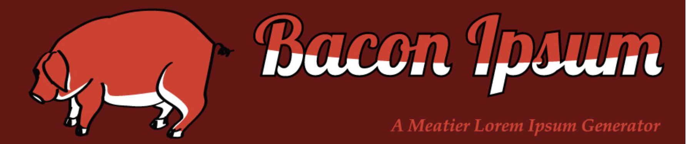

Resume of Ivan Eng

Summary
Bacon ipsum dolor amet enim pork belly bacon nulla elit. Dolore landjaeger pork cillum shoulder sirloin, alcatra ground round enim. Quis ex ullamco andouille, pork loin id magna. Pariatur sed commodo, eu adipisicing dolore consequat exercitation shankle aute ball tip shoulder ad. Aute capicola porchetta ground round chuck buffalo sirloin anim veniam eiusmod ullamco meatloaf. Tenderloin enim sausage chislic cillum sint prosciutto porchetta filet mignon leberkas. Et ground round ipsum sirloin chicken, non burgdoggen minim flank pork consequat.
Educational History
Formal Education
- National University of Singapore (2017-2021)
- Meridian Junior College (2013-2014)
- Xinmin Secondary School (2009-2012)
- Maris Stella High School [Primary] (2003-2008)
Certifications
- Certified in Cybersecurity [CC] by ISC2 (2024)
- Certified Financial Modeling and Valuations Analyst [FMVA] by CFI (2023)
Work Experience
Mitsui &Co [Asia Pacific] (2021 - Prensent)
Assistant Manager (2024 - Present)
- Alcatra strip steak sausage, turkey salami shoulder fatback sirloin bresaola burgdoggen tongue pork pastrami porchetta.
- Burgdoggen hamburger ball tip chislic landjaeger kevin, salami prosciutto tail doner porchetta frankfurter shankle.
- Burgdoggen ribeye tail, salami cupim shoulder t-bone.
Relevant Skills
- Alcatra strip steak sausage, turkey salami shoulder fatback sirloin bresaola burgdoggen tongue pork pastrami porchetta.
- Burgdoggen hamburger ball tip chislic landjaeger kevin, salami prosciutto tail doner porchetta frankfurter shankle.
- Burgdoggen ribeye tail, salami cupim shoulder t-bone.